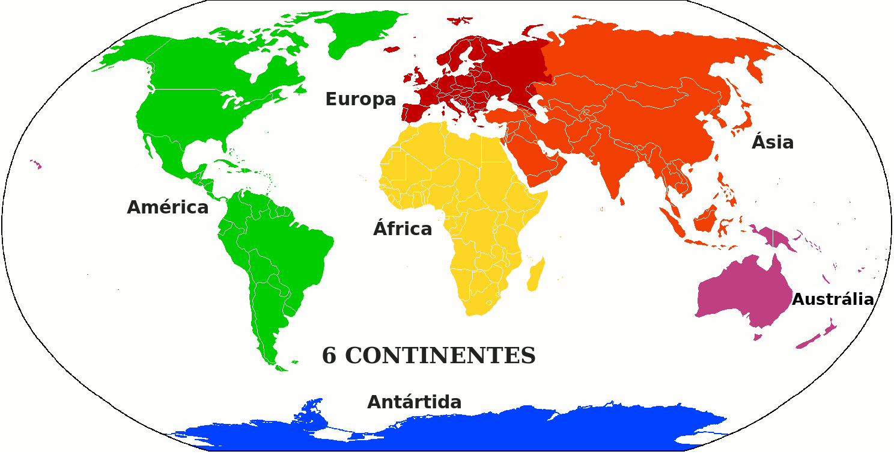

A Controvérsia na Definição de Continentes: Além dos Cinco Principais
Cauê Santos
11 de Novembro de 2023
A conceituação de continentes é uma questão que permeia a geografia há séculos, e embora muitos de nós tenhamos aprendido sobre os cinco continentes principais - América, Europa, Ásia, Oceania e África - a definição exata do que constitui um continente não é tão clara quanto pode parecer. Este artigo explorará a controvérsia em torno da definição de continente, destacando diferentes modelos e abordagens adotadas por diversas culturas e acadêmicos.

O Modelo Clássico de Cinco Continentes
O modelo clássico que divide o mundo em cinco continentes tem sido amplamente aceito e ensinado em
escolas ao redor do globo e esse modelo que é utilizado nesse site. Esse modelo destaca as divisões geográficas baseadas em critérios de
relevância histórica e cultural, mas não é isento de críticas. A América, por exemplo, é frequentemente
dividida em América do Norte e América do Sul, evidenciando a complexidade dessa abordagem.
Os cincos continentais do modelo:
- Ásia
- África
- Américas
- Europa
- Oceania
Modelo de Seis Continentes
Alguns estudiosos preferem dividir a América em América do Norte e América do Sul, resultando em seis continentes distintos. Essa abordagem busca uma divisão mais precisa das massas de terra, levando em consideração fatores geográficos e culturais. No entanto, a aceitação generalizada dessa visão permanece limitada.
Modelo de Sete Continentes
Outra abordagem inclui a Antártica como um continente separado, resultando em sete continentes no total. Apesar de a Antártica ser geograficamente distinta e significativa, sua inclusão como um continente é, por vezes, contestada, devido à sua natureza predominantemente gelada e inabitada.
Modelos Continentais em Outras Culturas
Enquanto o modelo de cinco ou seis continentes é comum no Ocidente, outras culturas têm perspectivas diferentes sobre as divisões continentais. Por exemplo, na China, um modelo tradicional considera a Europa e a Ásia como uma única massa de terra, conhecida como Eurásia. Essa perspectiva destaca as semelhanças geográficas e culturais entre essas regiões.
Controvérsias e Desafios na Definição de Continentes
A controvérsia na definição de continentes não se limita apenas à divisão geográfica. Fatores políticos, culturais e históricos também desempenham papéis significativos. Por exemplo, em alguns casos, a delimitação dos continentes é influenciada por acordos políticos e interesses nacionais, em vez de critérios estritamente geográficos.
Em última análise, a definição de continentes é um tópico complexo e multifacetado, sujeito a interpretações diversas. Os modelos tradicionais de cinco ou seis continentes podem ser convenientes para fins didáticos, mas é fundamental reconhecer que essas divisões não são absolutas. A compreensão das diferentes perspectivas sobre a controvérsia na definição de continentes enriquece nosso conhecimento geográfico e nos lembra da diversidade de abordagens que podem coexistir em uma disciplina tão fundamental para nossa compreensão do mundo.